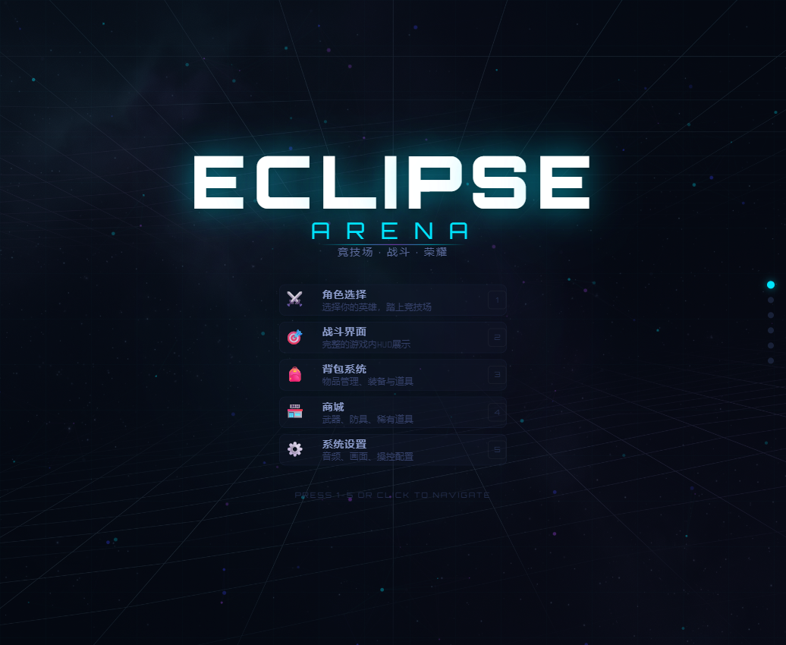
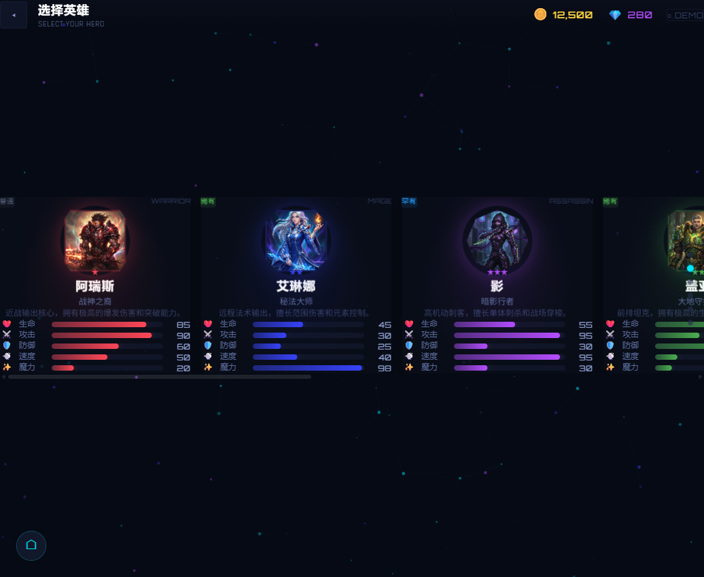
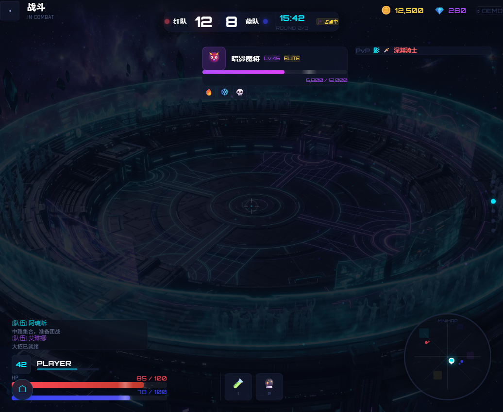
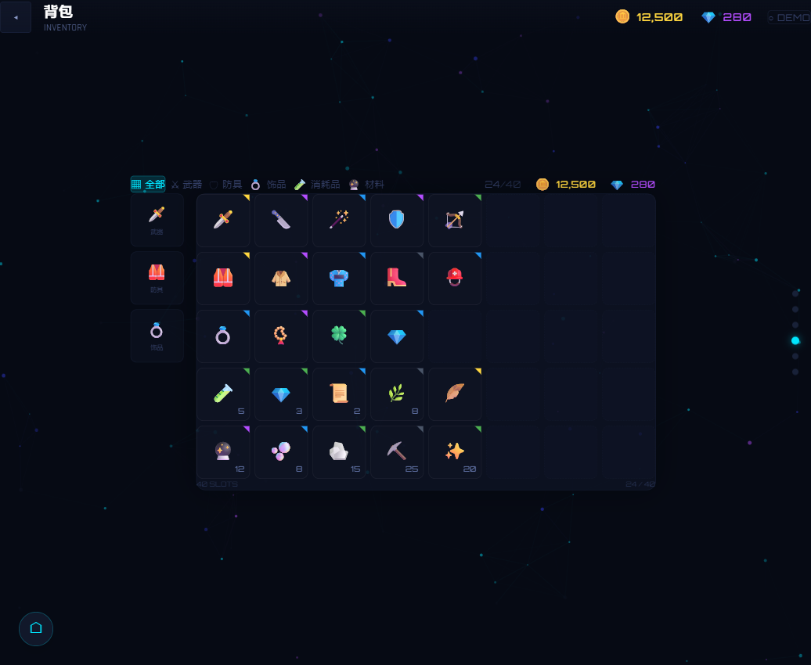
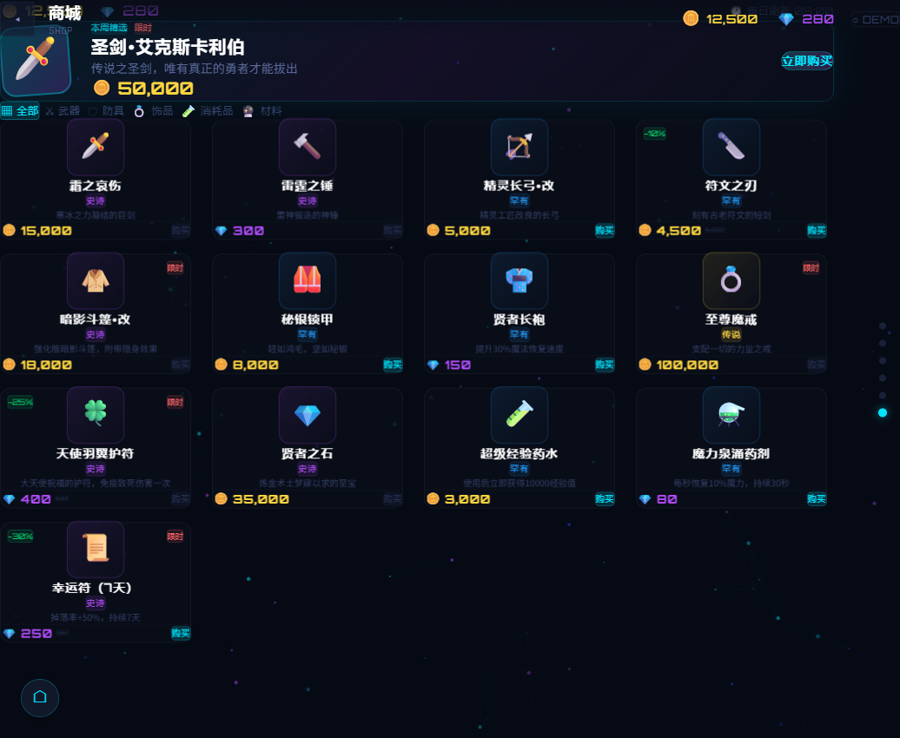
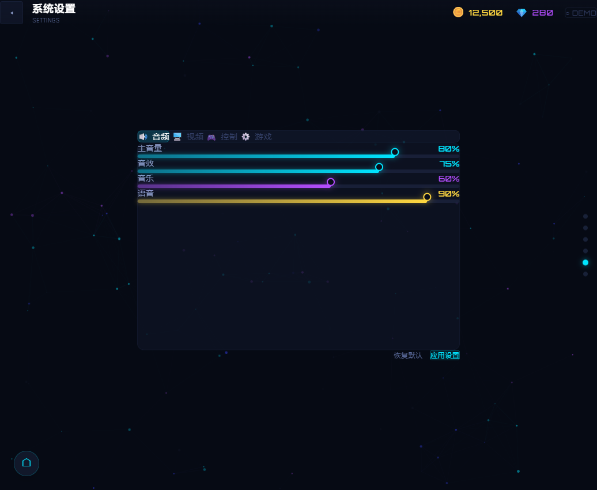

星 蚀 竞 技 场
科幻竞技场游戏完整UI设计语言系统。从主菜单到战斗HUD，从角色选择到商城系统——6大核心界面，15个可复用组件，一套完整的设计Token体系。
Eclipse Arena 是一个虚构的科幻竞技场游戏，我为其设计了完整的UI系统。项目目标是在作品集中展示游戏UI设计能力——不仅限于静态界面，还包括交互原型、动画系统、以及完整的设计Token管理。
与常见的UI设计展示不同，这个项目所有界面都是可交互的。从按钮的悬停光晕、卡片的3D弹簧倾斜、到页面间的对角线转场——每一处动效都经过精心调校。
React 18 · TypeScript · Tailwind CSS · Framer Motion 11 · Vite 5 · NanoBanana2 (Gemini 3.1 Flash Image) · Cloudflare Pages






全部8位英雄角色原画和2张场景背景均使用 NanoBanana2 (Gemini 3.1 Flash Image) 生成。核心成就不是"用了 AI"，而是建立了标准化的游戏美术资产生成管线。
管线流程：
效率：单张角色原画生成 ~2 分钟，8 张批量完成 <20 分钟。传统外包流程（需求沟通→草图→反馈→成稿）通常需要 2-4 周/角色。
一致性：统一的 Style Guide + 结构化 Prompt 确保 8 个角色放在同一界面中视觉协调，避免了 AI 生图常见的"风格漂移"问题。
可复用性：Style Guide 和 Prompt 模板可直接迁移至任何暗色调科幻题材项目。8张角色原画（各 ~5.5MB）+ 2张场景背景，总计 57MB。
项目的核心竞争力在于交互动效的实现深度。整个动画系统分为5个层次：
基于 AnimatePresence 的状态驱动导航。屏幕切换时触发对角线擦除转场，切换方向根据导航方向改变。退出动画和进入动画同时播放。
角色选择和商城卡片使用 useSpring + useMotionValue 实现。鼠标移动→卡片实时3D倾斜；鼠标离开→高刚度弹簧瞬间回弹（stiffness: 400, damping: 25）。每个卡片还有动态跟随的径向光晕。
战斗HUD具备实时状态更新：血量/蓝量条、技能冷却径向遮罩、击杀信息滚动（6秒自动清理）。使用 setInterval + useReducer 模拟游戏数据流。
Canvas 2D 粒子系统：120个粒子、连接线、颜色渐变。使用 requestAnimationFrame 实现60fps渲染，零布局开销。
完整的设计 Token 体系确保视觉一致性：
AI 管线成果：标准化 Prompt 管线 + Style Guide 建立，将角色原画从传统外包 2-4 周/角色 压缩至 ~2 分钟/张，8 张批量 <20 分钟完成。管线可直接迁移至同类型项目。
交互实现：5 层动画系统（转场 → 3D 卡片 → 微交互 → 实时模拟 → 粒子背景）在桌面端均 60fps 零帧率下降。React + Framer Motion + TypeScript 组件化架构，~3K 行代码。
设计资产：15 个可复用组件 + 完整 Design Token 体系（12 级色阶 + 语义色 + 稀有度色），可直接迁移至任何科幻暗色调 UI 项目。6 个界面全部可交互——从按钮光晕到页面转场均为设计规格驱动。
More Projects